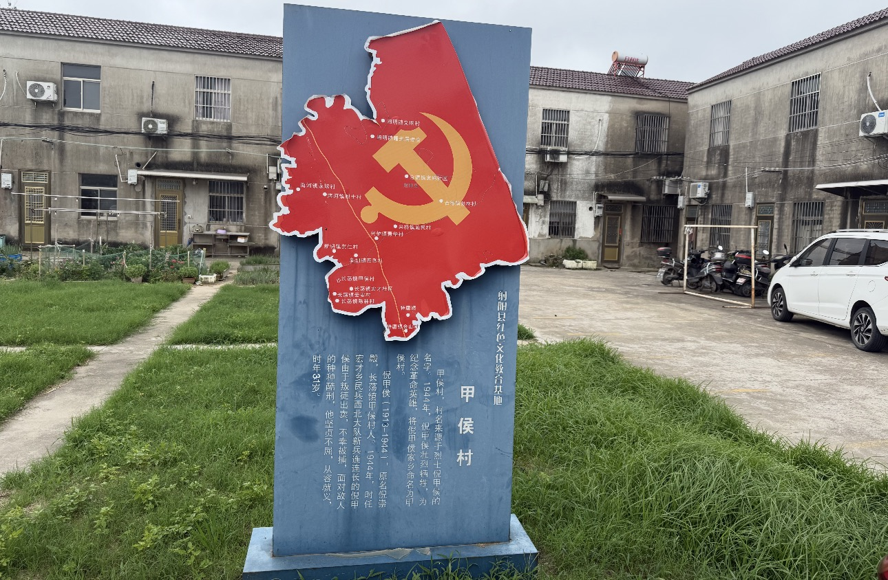

01 / VILLAGE PROFILE
乡村介绍

走进江苏省盐城市射阳县长荡镇甲侯村，认识这座以英烈之名传承红色基因、以现代农业书写振兴答卷的苏北村庄。
8500亩全村总面积
7095亩耕地面积
1445户常住户数
85名正式党员
甲侯村隶属于江苏省盐城市射阳县长荡镇，坐落于长荡镇西部片区，是长荡镇对外联通的西大门，地理位置优越、区位优势明显，是当地极具代表性的红色革命示范村、乡村振兴重点村、和美宜居示范村。
全村总占地面积8500亩，其中耕地面积7095亩，土地资源丰富、地势平坦开阔，属于典型的苏北平原农耕地貌，土壤肥沃、水源充足，非常适宜粮食作物与特色经济果蔬规模化种植。
村庄行政架构规整，下辖9个村民小组，全村常住1445户、总人口4440人。村内基层党组织建设完善，现有正式党员85名，党员队伍结构合理、年轻化程度高，是村级治理、乡村服务、志愿活动、乡村振兴推进的核心骨干力量。
交通区位条件十分便利，连盐高铁贯穿全村，村内主干道路全部完成拓宽硬化、亮化、绿化升级，村组道路互联互通、路网规整通畅，对外可快速连通射阳县城、盐城市区及周边乡镇，为农产品外销、乡村旅游、研学实践、村民出行提供了优越的交通基础。
甲侯村历史底蕴深厚，为红色烈士命名村。村庄名称源自抗战英烈倪爵侯烈士，同时村内承载着倪爵侯、倪崇凤“一门双烈”的红色革命历史。早年分为甲侯乡、崇凤村两大片区，2001年正式合并，统一定名甲侯村。
整体村容村貌整洁优美，村庄整体规划统一，人居环境质量高，先后推进农房风貌提升、河道疏浚、污水治理、庭院美化、村庄绿化、道路提档等民生工程，成功创建省级卫生村、文明乡风示范村。
产业基础扎实，以现代化绿色农业为主体，形成优质稻麦、精品梨果、特色韭菜、订单辣椒四大支柱产业，规模化、合作社化、订单化种植模式成熟，是长荡镇果蔬富民产业核心示范片区。
村级治理体系完善，设有党群服务中心、新时代文明实践站、红色文化传习所、乡村文化广场、红色教育公园等公共服务阵地，常年承接红色研学、社会实践、志愿服务、基层宣讲等活动。
从土地流转到红色传承，从梨园丰收到文明乡风，四条脉络共同构成甲侯村的文化底色。
土地流转：激活乡村发展的核心抓手
土地流转是甲侯村激活乡村土地资源、推动产业规模化、壮大集体经济、带动村民增收的核心抓手。近年来，甲侯村在依法、自愿、有偿原则基础上，大力推进规范化、规模化土地流转，集中盘活闲置、细碎、老龄耕种土地，实现土地集约化、种植规模化、产业现代化。
01土地流转总体规模
全村累计成功流转良田3000余亩，覆盖多个村民小组。通过统一规整田块、填平废沟塘、整合边角地，解决土地碎片化、耕作分散、农机难作业等问题，大幅提升土地利用价值。
02村企大规模合作流转
2020年6月，甲侯村与射阳国投农业科技公司达成合作，集中流转四、六、七、八、九组共2400亩连片土地，规模化种植优质水稻、大麦等粮食作物。
- 统一高标准农田管理
- 全程机械化耕种
- 稳定保底收益
- 保障村集体长期固定收入
03合作社特色产业流转
村内致富带头人牵头成立鑫龙蔬菜专业合作社，初期流转200亩建设辣椒示范基地，后续建成千亩辣椒种植基地，采用成熟的“五统一分”标准化运营模式。
04规范化公开流转机制
土地流转全部公开招标、透明公示，常规租期为3年，流程通过农村产权交易平台备案。村委会还统一整合高龄农户无力耕种、外出务工造成的闲置田块，有效解决土地撂荒问题。
土地流转带来的三大成效
村民增收稳定村民每年获得固定土地租金，还可就近到合作社、种植基地务工，实现“土地租金+务工工资”双收入。
村集体经济壮大规模化土地流转和村企合作带来长期稳定经营性收入，增强村级自我造血能力。
产业全面升级从零散种植转向机械化、标准化、产业化，形成粮食大宗产业与辣椒特色产业双驱动格局。
一门双烈，两代忠魂
甲侯村是盐阜地区知名的烈士命名村，拥有深厚的革命红色基因，是当地重要的爱国主义红色教育基地。村庄名称为纪念抗日英雄倪爵侯、倪崇凤兄弟而来，流传着“一门双烈、两代忠魂”的感人革命故事。
抗战时期，倪爵侯同志投身革命，组建地方武装，凭借一把步枪坚持敌后抗日，作战英勇、意志坚定，被捕后严守党的秘密、宁死不屈，年仅31岁壮烈牺牲。其兄长倪崇凤主动投身支前队伍，在前线抢运伤员时不幸牺牲。兄弟二人用生命诠释家国担当，成为甲侯村代代相传的精神丰碑。
为传承英烈精神，村内高标准打造红色文化传习所、红色文化主题墙、红色文化公园、革命烈士纪念碑等红色阵地，常态化开展清明祭英烈、红色故事宣讲、青少年红色研学、主题党日等教育活动。
丰收节庆里的田园文化名片
甲侯村依托优质果蔬产业，形成了独树一帜的乡村丰收文化。村内梨果、韭菜、辣椒、优质稻米产业成熟，是长荡镇果蔬富民核心村。
村里每年定期举办“庆丰收、话振兴”梨文化艺术节，开展文艺汇演、丰收展示、乡风宣讲、移风易俗倡议等活动，以节庆文化展示乡村产业成果和村民精神风貌。
依托千亩梨园资源，村内打造“梨姑娘找婆家”特色文明实践品牌，将农耕产业与乡村文化、青年力量、乡村振兴结合，形成产业文化与精神文明双向融合的特色模式。
红色精神涵养文明乡风
甲侯村坚持以红色精神涵养乡风文明，形成淳朴向善、团结奋进、崇文重教、敬老爱亲的优良村风。
村内组建好人志愿服务队、退役军人志愿服务队、老年志愿队、青年志愿队，常态化开展助老助残、环境整治、政策宣讲、文明劝导等志愿活动。
村内持续推进移风易俗建设，倡导文明节俭、喜事新办、丧事简办，依托文化广场、新时代文明实践站开展文明评比、道德宣讲、好人好事表彰，营造文明和谐、积极向上的乡村氛围。
立足临海平原圩区实际，以全域排查、铁路巡检、群众转移和应急科普筑牢甲侯村防台防汛屏障。
甲侯村地处射阳县长荡镇西部，紧邻青盐铁路，常年受台风、大风、暴雨内涝等极端天气侵扰。村内存在连片农田、果蔬种植大棚、老旧农房、铁路沿线临时搭建物等多重安全隐患。受9号台风“巴威”影响，本地防台防汛压力陡增，天津天狮学院青禾智耕实践团走进甲侯村，围绕村庄台风防御重点工作开展专项志愿服务。
01全域拉网隐患排查
实践团配合村两委对村内主干道、田间排涝堤坝、农用桥梁、高空光伏设备、户外广告牌等点位逐一巡检，检查设施牢固度与排水沟渠通畅情况，对松动和存在倒伏风险的设施登记造册，协助落实加固整改。
团队重点排查老旧危房、简易搭建小屋，核查墙体开裂、屋顶渗漏等坍塌风险，提前标记高危住房，从源头规避台风天气房屋伤人、漏水等安全事故。
专项巡查铁路沿线
青盐铁路贯穿甲侯村，沿线分布大量铁皮棚和临时农用搭建物，大风天气板材、支架易脱落侵入轨道。实践团分段巡检临建棚体锈蚀、板材松动、固定支架老化等隐患，及时反馈风险点位，协助完成铁皮围挡加固、危险搭建临时拆除、隔离警示设置，守住铁路运行安全底线。
帮扶特殊群体转移
实践团深入村组走访独居老人、残疾人、留守儿童等重点群体，上门宣讲台风避险知识，告知暴雨、大风天气居家和转移注意事项；配合村干部协助行动不便人员转移至党群服务中心临时避险安置点。
团队同时清点、规整防汛沙袋、抽水泵、照明工具等抢险物资，规范分类堆放，充实村庄防台物资储备体系。
青年冲锋一线实操服务
团队参与隐患排查、铁路安防、人员转移、物资储备和安全科普，向村民讲解沟渠排涝、大棚加固、居家避险等知识，并深入田间协助种植户捆扎棚膜、加固果树支架，降低台风对辣椒、梨园及连片农田造成的经济损失。
后续长效实践规划
实践团将持续深化与甲侯村的校地合作，结合土地流转产业、红色文化建设和乡村应急治理需求，常态化开展防灾宣传、铁路沿线安全巡查、科技助农等服务，助力完善村级极端天气长效防御体系。
04 / SOIL & ECOLOGY
土壤生态类别
解析滨海冲积平原弱碱性土壤，匹配适宜农作物，并从黄海湿地生态文脉中寻找乡村可持续发展的答案。
甲侯村土壤酸碱度特征及适配农作物分析
甲侯村坐落于江苏省盐城市射阳县滨海冲积平原，属于典型退海冲积地貌。全村土壤分为滨海盐渍型水稻土、潮盐土、滩涂草甸盐土、村庄杂填土四大类，整体呈弱碱性，耕层土壤pH稳定在7.5～8.5，是苏北沿海典型的富钾盐碱改良农田。
受海洋沉积影响，土壤天然富含钾元素，速效钾含量70～210mg/kg，有机质含量16.0～20.5g/kg，具有独特“夜潮”特性，保水蓄水能力强；但台风、暴雨后易出现表层返盐，阶段性抬高局部地块pH值。
pH 7.5～8.2连片稻田
滨海盐渍型水稻土
经数十年淡水灌溉淋洗，盐分大幅降低，肥力最优。弱碱环境利于稻谷淀粉积累；但长期单一施用化肥易造成磷元素固定，台风积水后还可能因地下盐水上返诱发病虫害。
pH 7.8～8.5旱地菜园／大蒜田
潮盐土
透气性强、昼夜温差大，适配大蒜生长并有利于大蒜素合成；干旱、大风天气易使表层盐分上浮，长期种植可能出现土壤板结和幼苗出苗困难。
pH 8.3～8.8河道滩涂／蟹塘周边
草甸滨海盐土
低洼地块碱性最强、地下水咸度大，仅耐盐植被可自然生长。潮汐倒灌和台风雨水汇集会持续抬高pH，漫水还可能破坏邻近耕地酸碱平衡。
pH 7.6～8.3道路／光伏区／危房空地
人工杂填土
由建筑垃圾与原生泥土混合形成，酸碱度中等，但土层杂乱、肥力很低，雨水冲刷易流失泥沙，不具备规模化种植价值。
基于土壤酸碱度的适宜农作物分类
水田：pH 7.5～8.2
优质粳稻：盐稻21号、金粳818、鹤乡粳系列。水田持续淡水灌溉可稳定pH，富钾土壤使稻谷饱满，是“射阳大米”的核心种植品种。
冬小麦：水稻小麦轮作适配本地水土，可减少根腐病，并起到淋盐降碱、改良土壤作用。
生态水产配套：稻蟹共养可缓冲土壤碱性，螃蟹排泄物补充有机质，实现种养双收。
旱地：pH 7.8～8.5
大蒜：天然耐弱碱，碱性土壤能促进大蒜素积累，是村民主要增收农产品。
耐盐油料作物：油菜、大豆可适应轻度盐碱旱地，并帮助改良地力。
家常蔬菜：韭菜、菠菜、萝卜、卷心菜耐碱性较强；番茄、生菜等喜酸蔬菜需额外施用有机肥中和碱性。
滩涂高碱地块：pH 8.3以上
经济改良绿植：芦苇、碱蓬、田菁可吸附土壤盐分、降低地块pH。
水产养殖：适宜发展螃蟹、淡水鱼虾，规避盐碱对种植业的限制。
土壤酸碱失衡改良建议
稻田维稳：汛期和台风后及时排水，避免盐水上返；秸秆还田并施用腐熟有机肥。
大蒜旱地改良：冬季种植绿肥，搭配少量酸性有机肥，缓解板结与表层盐分。
滩涂管控：在河道、蟹塘周边种植芦苇防风缓冲带，阻挡咸水漫入农田。
农户简易自测：实践团提供病虫害识别小程序，并科普土壤酸碱度简易辨别方法。
WETLAND CULTURE
潮起黄海润滩涂，文脉共生护湿地
盐城坐拥4550多平方公里滨海湿地，是我国首处滨海湿地类世界自然遗产、国际湿地城市。射阳甲侯村坐落于黄海湿地沿岸，潮汐森林、芦荡滩涂、候鸟稻田与河湖水系共同构筑东亚—澳大利西亚候鸟迁飞通道的核心生态屏障，也孕育出滩涂渔耕、候鸟守护和盐碱农耕文化。
一、湿地孕育本土生态文脉
千年渔耕共生的滩涂民俗文化
盐城先民世代依滩涂而生，形成顺应潮汐、取之有度的生存智慧。退潮赶海、稻蟹共养、滩涂捕捞、大蒜水稻轮作，体现“不涸泽而渔、不毁滩而耕”的自然准则。村民懂得连片芦苇能削弱台风风力，潮汐水系可灌溉改良盐碱土，滩涂湿地能循环净化水质。
候鸟守护的精神文化印记
盐城是丹顶鹤、勺嘴鹬核心越冬地。当地从“驱鸟护粮”转向“留粮护鸟”：秋冬稻田留存谷穗，蟹塘预留浅水区，村民自发制止乱捕鸟类和向河道倾倒垃圾，护鸟、爱鸟成为乡村文明共识。
湿地孕育的乡土产业文化
弱碱性滨海盐土催生水稻、大蒜、螃蟹特色种养产业，形成“湿地—农田—水产”循环农业文化。射阳大米、沿海大蒜、生态大闸蟹成为特色农产品，生态观光和观鸟研学推动村民从“靠海吃海”走向“护海富民”。
二、湿地生态面临的现实挑战
台风暴雨冲击：强降雨和潮水倒灌会造成盐碱回流，杂物冲入河道会堵塞潮沟、污染湿地水体，村内铁路、堤坝、沟渠和光伏设施隐患还会间接破坏湿地连通性。
农业生产压力：化肥农药残留随雨水汇入湿地，废弃农药袋和塑料垃圾威胁底栖生物与候鸟，外来物种互花米草侵占原生滩涂。
保护认知仍需提升：部分村民对现代湿地保护和生物多样性知识了解不足，青少年也缺少常态化湿地科普课堂。
三、湿地生态保护实践
系统性生态修复：推进退渔还湿、岸线生态化改造、外来物种治理、河道清淤与堤坝生态化改造，在滩涂与农田之间建设芦苇缓冲带。
乡村落地治理：实践团巡查桥梁、堤坝、河道和铁路沿线，清理垃圾与废弃建材；面向村民开展湿地生态课堂，推广科学施肥和低污染种植；引导群众采用稻蟹共生、冬季休耕留谷等生态模式。
青年研学赋能：团队开展湿地土壤调研、鸟类保护宣讲和防汛生态科普，通过田间走访记录滩涂渔耕文化，把现代生态保护理念与传统共生智慧结合。
守护湿地，不只是守护万千生灵的家园，也是守护盐城独有的渔耕生态文化，守护沿海乡村的生存根基。
05 / VILLAGE CLASSROOM
课堂进乡村
反诈护老守平安，编程启智伴童行——让知识走进乡村、惠及群众。
三下乡科普进乡村｜反诈护老守平安，编程启智伴童行
天津天狮学院信息与人工智能学院青禾智耕实践团走进甲侯村，开展老年反诈科普、乡村生态知识普及、少儿计算机科普与趣味编程课堂系列志愿服务，以青春之力点亮乡村科普之光。
01反诈宣讲护晚年
队员结合乡村高发案例，用通俗语言讲解虚假中奖、保健品骗局、冒充亲友借钱、短视频刷单、冒充客服退款等套路，通过现场问答与情景提醒，宣传“不轻信陌生来电、不随意点击链接、不泄露验证码、不轻易转账”四大原则。
团队还入户走访，一对一提醒老年居民遇到可疑情况及时与家人、村干部核实，守好养老钱。
02生态科普入乡村
实践团围绕农村生活垃圾治理、河道保护、绿色种植、秸秆禁烧、人居环境整治、节约用水用电等知识展开讲解，引导村民保护乡村水土资源，养成绿色低碳生活习惯，共建和美宜居家园。
03趣味编程点亮梦想
团队发挥计算机专业优势，为儿童讲解计算机组成、键鼠功能、电脑使用常识和网络安全知识。在图形化编程体验中，孩子们通过拖拽、模块组合和逻辑拼接完成小程序，直观感受代码与逻辑的魅力。
04青春下乡传新知
一老一小双向守护、生态科技双向普及，既守护老年人财产安全、传播绿色理念，也为乡村儿童带来科技启蒙。团队将继续开展反诈科普、生态宣讲、科技支教和助农服务，以知识助乡、科技兴乡、青春润乡。
青禾智耕实践团隶属于天津天狮学院信息与人工智能学院，由计算机科学与技术专业四名学生共同组建。团队依托新媒体宣传、网页网站开发、视频影像剪辑等数字化技术优势，深入乡村开展社会实践、应急志愿服务、乡村调研与数字宣传工作。
01新媒体推文文案编辑
李娜-负责宣传文案策划、撰写与排版推送，梳理每日实践、整理调研素材，完成实践纪实、防台防汛新闻稿、乡村人物故事、活动总结和公众号推文，构建系统化的文字宣传体系。
02网站搭建与页面开发
龙姿茹-负责专题实践网站架构、页面布局、功能完善与内容更新，将村情概况、红色文化、产业经济、土地流转、天气防御和实践成果系统录入网站，打造数字展示平台。
03视频拍摄与后期剪辑
刘笑彤-负责活动全程影像记录、素材筛选、主题剪辑与成片制作，跟拍防台防汛、乡村走访、隐患排查、铁路巡检和基层帮扶，以纪实影像还原青年实践全过程。
04素材整理与辅助剪辑
刘芷晗-承担素材分类、镜头筛选、画面修整、备份归档、片段拼接和细节精修，协助完成视频节奏调整、内容删减与画面优化，保障团队视频高效、高质产出。
四位成员各司其职、紧密配合，将计算机专业知识、新媒体技术、数字传媒能力融入乡村社会实践，以数字力量助力基层治理，以青春担当服务乡村振兴。


塔里木大学：反诈宣传进社区，守护居民财产安全
日前，塔里木大学水利与建筑工程学院“反诈同心 防诈同行”社会实践团深入新疆维吾尔自治区阿拉尔市社区开展反诈宣传系列活动。 【详情】